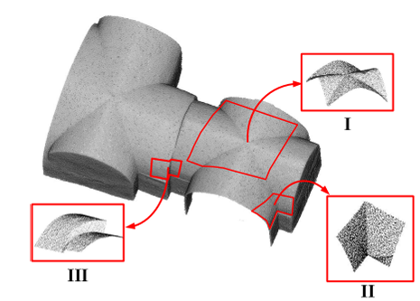
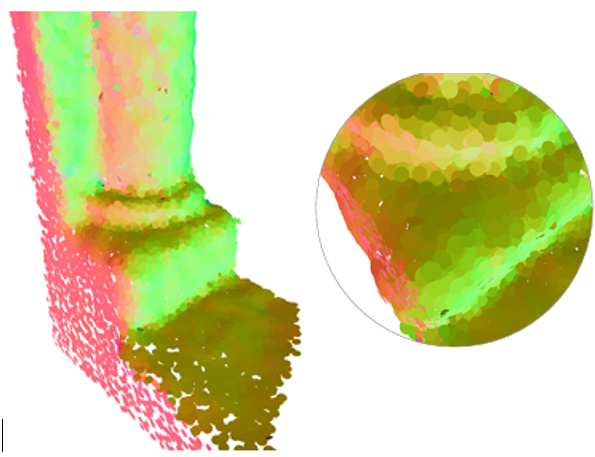
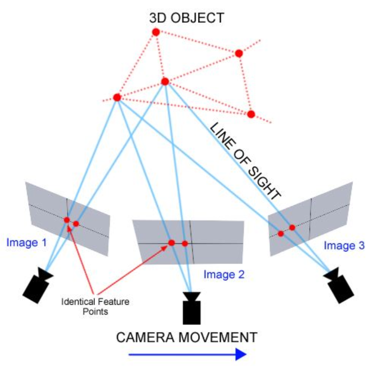
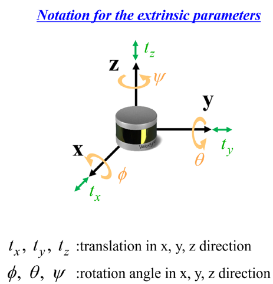

|
Whats New?
Aug 18, 2025 - I attended the International Cartographic Conference 2025.
Dec 24, 2024 - I completed 170 hour of the AI and Deep Learning Models Development Program at Google and Reichman Tech School.
Aug 12, 2024 - I received the Google and Reichman Tech School attendance grant for the AI and Deep Learning Models Development Program.
Jun 29, 2024 - I completed the
Deep Learning Specialization at Coursera.
Include the courses
Convolutional Neural Networks,
Improving Deep Neural Networks – Hyperparameter Tuning, Regularization and Optimization,
Neural Networks and Deep Learning, and
Structuring Machine Learning Projects.
Mar 29, 2024 - I received Certified Surveyor certification.
Mar 29, 2023 - I attend CIPA spring school for Cultural Heritage 3D surveying and Modelling.
May 30, 2022 - I received the ISPRS 2022 congress attendance grant award.
May 30, 2022 - Robust Normal Estimation was accepted to ISPRS 2022.
Feb 25, 2022 - Noise Model was accepted to ISPRS 2022.
Spring Semester, 2018/2019 - Dean’s List Award For Outstanding Academic Achievements.
|
|

|
High Fidelity Edge Aware Normal Estimation For Low Resolution And Noisy Point Clouds Of Heritage Sites
Joelle Abu-Hani, Tian Zhang, Sagi Filin
International Society for Photogrammetry and Remote Sensing (ISPRS), 2022
[paper]
|
|

|
Shape Preserving Noise Attenuation Model For 3-D-Modeling Of Heritage Sites By Portable Laser Scans
Tian Zhang, Joelle Abu-Hani, Sagi Filin
International Society for Photogrammetry and Remote Sensing (ISPRS), 2022
[paper]
|
|

|
Photogrammetry 1
Teaching with
Prof. Sagi Filin
[14834]
Winter 2020
The course focuses on mathematical model of perspective projection, stereoscopic vision, coordinate transformations, camera geometry, orientation principles, and aerial triangulation.
|
|

|
Adjustment Computation 2
Taught in English with Prof. Joshua Greenfeld
[16801]
Winter 2022, Winter 2023
The course focuses on extensions of adjustment by conditions without unknowns, adjustment by parameters and stochastic constraints, a unified approach to least-squares adjustment, adjustment of empirical functions using orthogonal and trigonometric polynomials.
|
|
{kind=link}
{kind=link}
{kind=link}
{kind=link}
{kind=link}